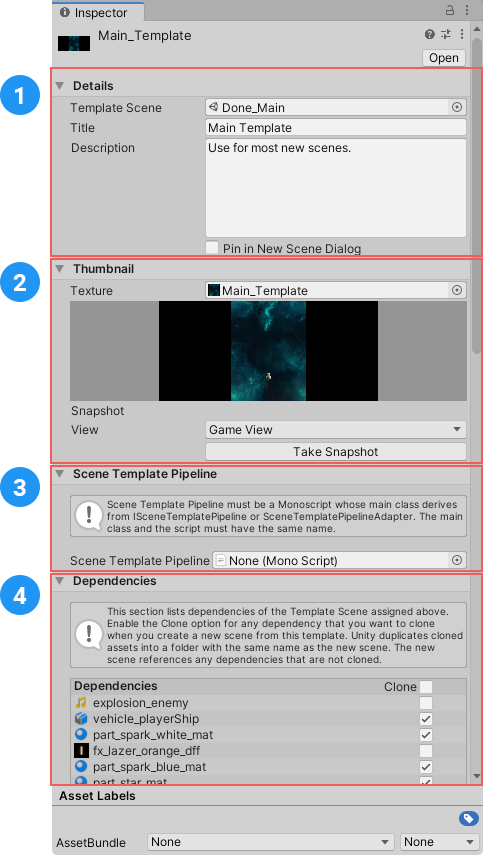
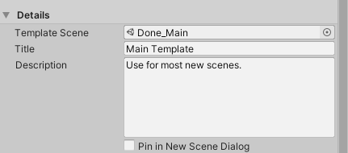
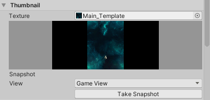
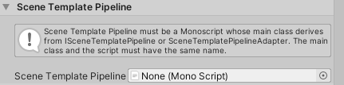

Editing scene templates
To edit a scene template, select it in the Project window, then open it in an Inspector window.
| 注意： |
|---|
| When you first create an empty scene template, you must edit its properties to associate it with a scene before you can use it. Templates that you create from the active scene, or an existing scene asset, have some properties set by default. |

The scene template Inspector
The scene template Inspector has the following sections:
- Details: Specifies which scene the template uses, and contains the template description that appears in the New Scene dialog.
- Thumbnail: Provides options for creating a preview image for the template.
- Scene Template Pipeline: Specifies an optional custom script to run when Unity creates a new scene from the template.
- Dependencies: Lists the template scene’s dependencies, and specifies whether Unity clones them when it creates a new scene from the template.
详细信息
Use the Details section to specify which scene to use for a template, and control how the template appears in the New Scene dialog.

| 属性： | 描述： | |
|---|---|---|
| Template Scene | Specifies the scene to use as a template. This can be any scene in the Project. | |
| Title | The template name. The name you enter here appears in the New Scene dialog. | |
| 描述 | The template description. The description you enter here appears in the New Scene dialog. | |
| Pin in New Scene Dialog | Controls whether this template is pinned in the New Scene dialog. Pinned templates always appear at the top of the Scene Templates in Project list. |
|
Thumbnail
The Thumbnail section contains options for creating a preview image for the template. The preview image appears in the New Scene dialog.

| 属性： | 描述： | |
|---|---|---|
| Texture | Specifies a Texture asset to use as a thumbnail for this template. You can use any Texture asset in the Project. If you don’t assign a Texture, the template uses the default scene template asset icon. |
|
| [Thumbnail Preview] | Displays the template’s thumbnail texture, if it has one. | |
| Snapshot | Provides options for capturing a thumbnail image for this template. | |
| View | Specifies whether to capture the Main Camera view or the Game View. | |
| Take Snapshot | Click this button to capture the selected View. | |
Scene Template Pipeline
Use these properties to add a Scene Template Pipeline script to this template.

A Scene Template Pipeline script lets you execute custom code when you create a new scene from the template. See Customizing new scene creation.
Dependencies
This section lists all of the template scene’s Dependencies. You can specify whether or not to Clone each dependency when you create a new scene from the template.

For each dependency in the list, toggle the Clone option on to clone the dependency, or off to reference the dependency.
When you create a new scene from the template, Unity checks whether the template scene has cloneable dependencies. If it does, Unity creates a folder with the same name as the new scene, and puts any cloned dependencies in that folder.
For more information about cloned and referenced dependencies, see Templates and scene dependencies.
To specify which types of asset Unity clones by default, edit the scene template Project settings.